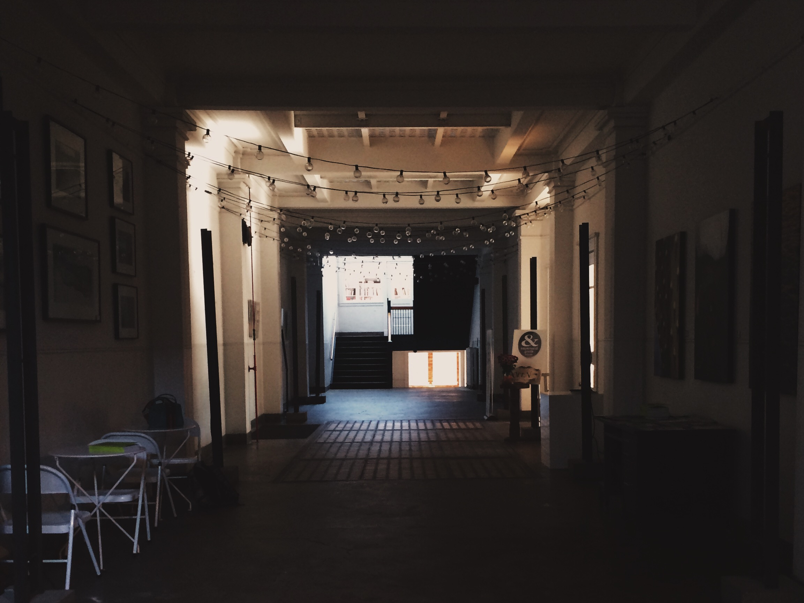

Day one, here we go! Well me being the over prepared liz lemon that I am, showed up at 7:30, making sure I had enough time to beat rush hour traffic. Well funny story, they didn’t open until 9:00 that day. awkward. So I went and explored the building, found the semi creepy restroom, looked at the beautifully lit architecture offices upstairs, and peaked in the the other storefronts on our floor. In retrospect I should have run down the street to grabbed coffee and a donut.

Interior hallway of 2026 Galleries.
First Impressions
If you’re not being fucking honest with yourself how could you ever hope to communicate something meaningful to someone else? Don’t worry about what other people fucking think. The details are not the details. They make the fucking design. Someday is not a fucking day of the week. Your rapidograph pens are fucking dried up, the x-acto blades in your bag are rusty, and your mind is dull. Stop clicking your mouse, get messy, go back to the basics and make something fucking original. When you design, you have to draw on your own fucking life experiences. If it’s not